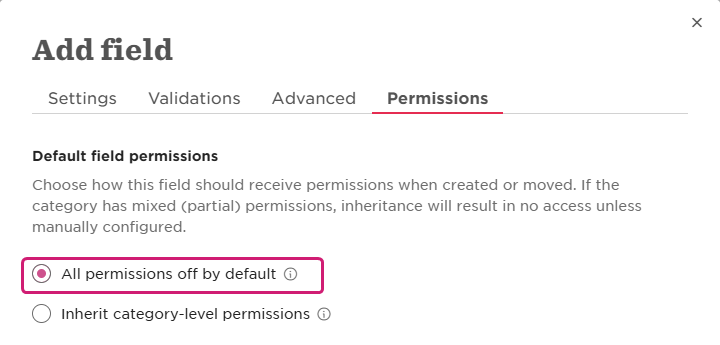
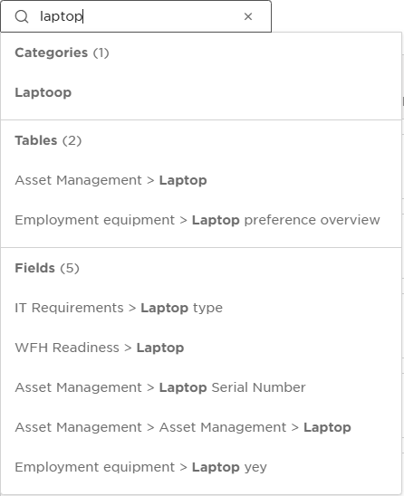
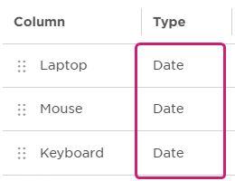
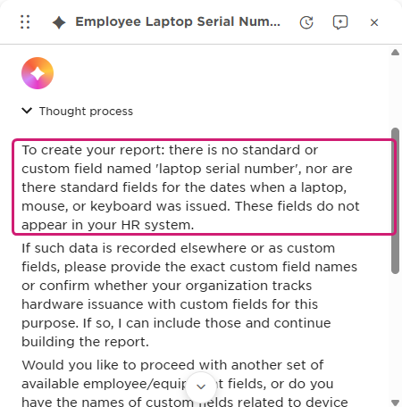
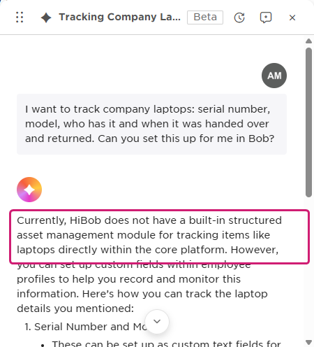

HiBob · Core HR · Configurable data structures
Customers can add their own data to Bob. Getting it to work for them is the hard part.
My recommendation: custom objects that admins set up with AI, ready for reports and Bob's AI from day one.
Roy · September 2026
Who it's for
Why it's hard today

What that leads to: one example


Why it matters now
The report builder also finds nothing for "laptop", "serial" or "asset", and table import doesn't offer the Laptop table.

there is no standard or custom field named 'laptop serial number'

HiBob does not have a built-in structured asset management module
What others offer
| Platform | What customers can create | What it connects to |
|---|---|---|
| Rippling | Custom objects, alongside built-in ones like Device | Linked to employees or to other custom objects. Used in reports, custom apps and workflows. |
| SAP SuccessFactors | Custom objects in its Metadata Framework | Their own security, business rules, workflows, reporting and API. |
| Workday | Custom objects that extend a Workday object, like Worker | Shown on the worker's profile, usable in reports, with their own security. |
| Bob today | Custom fields and tables on people's profiles | Shown on the profile and usable in flows. Access off by default. |
The difference isn't where the data is stored. It's what comes with the object, like reports, security and workflows.
From public documentation. Workday's details come from a partner's guide, since Workday's own docs need a login.
Recommendation
Not in the first version: custom data that payroll calculations depend on, IT asset management as a product, and org structures.
Tradeoffs
Prototype
Track certifications with an expiry date. Remind the manager 30 days before.
Delivery
No timelines. I'd size these with engineering. If objects turn out cheaper than expected, phase 3 can start alongside 1 and 2.
From idea to customer value
Success